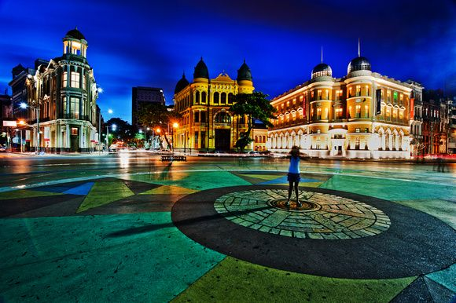
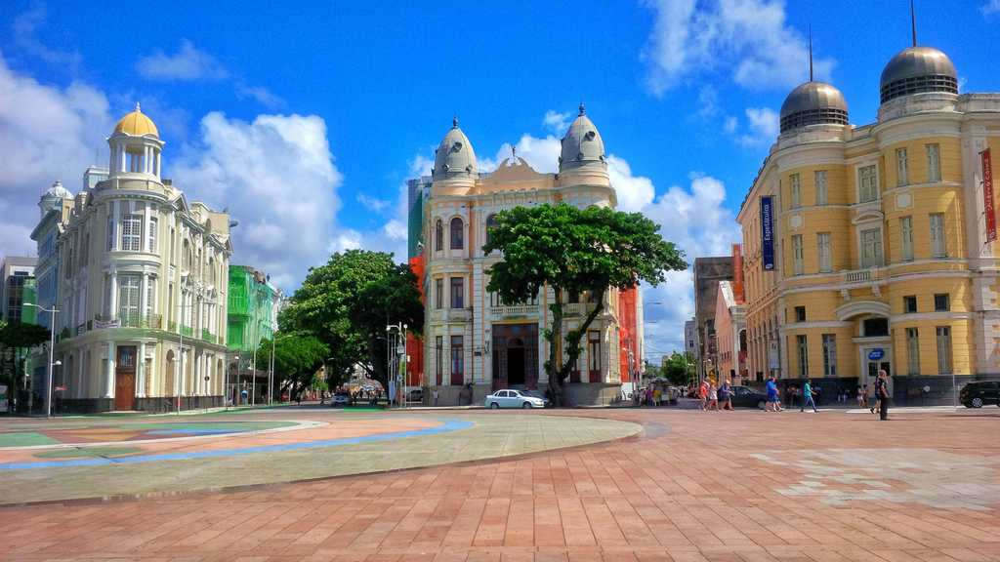

A cidade chamada Recife
A cidade do Recife, localizada no estado de Pernambuco, Brasil, é conhecida como a "Veneza Brasileira" devido à sua grande quantidade de rios, pontes e canais. É a capital do estado e uma das cidades mais antigas do país, com uma rica história que remonta aos tempos coloniais. O Recife é um importante centro econômico, comercial e cultural da região nordeste do Brasil. A cidade possui uma economia diversificada, com destaque para os setores de serviços, comércio, indústria e tecnologia. É sede de várias empresas nacionais e internacionais, além de contar com um dos maiores polos médicos e de ensino superior do país. A cultura do Recife é marcada pela influência africana, indígena e europeia, resultando em uma mistura única de tradições, festas populares, culinária e música. O carnaval do Recife e Olinda é um dos mais famosos do Brasil, com desfiles de maracatu, frevo e blocos de rua que atraem milhares de turistas todos os anos. A cidade também é conhecida por suas belas praias, como Boa Viagem, Pina e Brasília Teimosa, que são pontos de encontro para moradores e turistas em busca de lazer e diversão. Além disso, o Recife possui diversos parques, museus, teatros e centros culturais, oferecendo uma ampla variedade de opções de entretenimento e atividades. No aspecto histórico, o Recife preserva muitos edifícios e monumentos coloniais, como o Marco Zero, a Praça do Arsenal, a Igreja da Sé e o Forte das Cinco Pontas. A cidade também abriga o famoso bairro do Recife Antigo, com suas casas coloridas, ruas de paralelepípedos e uma animada vida noturna. Em resumo, o Recife é uma cidade vibrante, cheia de história, cultura e belezas naturais. Com sua rica diversidade cultural, economia dinâmica e atrativos turísticos, é um destino imperdível para quem visita o Brasil.
Marco Zero, um destaque!
Dentre as belezas do Recife, daremos destaque para o Marco Zero.
Veja as belas fotos do Marco zero!
 